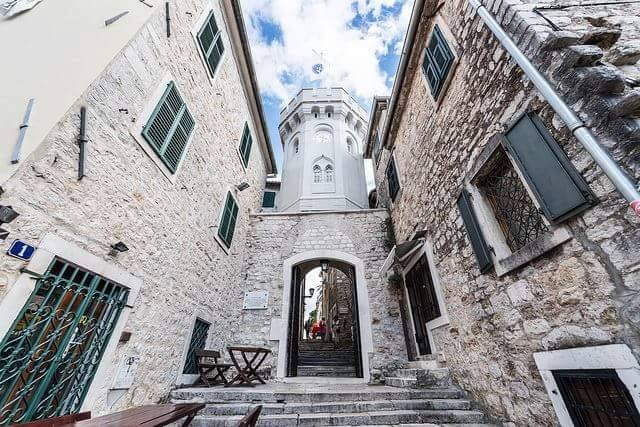
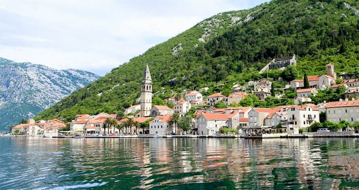

TOP 17 HERCEG NOVI ATRAKCIJE KOJE NE MOŽETE PROPUSTITI U CRNOJ GORI NA ODMORU
Ako planirate odmor u Crnoj Gori, možda biste se željeli zaustaviti u manje poznatom, nevjerovatnom plažnom gradu Herceg Novom. Budući da nije popularno odredište mnogih turista, tiho je i mirno, što ga čini savršenim mestom za zaustavljanje na nekoliko dana između putovanja. Dok ste tamo, ima se dosta za raditi, videti i jesti. Evo 19 atrakcija Herceg Novog koje ne smete propustiti tokom putovanja:
1GRADSKA LUKA, ŠKVER
Neformalni je centar Herceg Novog i žila je kucavica grada. Ovo je mjesto gdje svakodnevno i zimi i ljeti sve vrvi od sugrađana, turista, umjetnika, djece, ribara, skipera… Ako pitate Novljane Škver je mjesto gdje se sve dešava.
Na mjestu gdje se spajaju glavno gradsko stepenište i šetalište Pet Danica, podignut je spomenik osnivaču grada, bosanskom kralju Tvrtku I Kotromaniću. Osim luke i mula, o prošlosti Škvera svjedoči i nekadašnja stanica popularnog voza “Ćira”, danas mjesto za uživanje. U ovom dijelu grada satkanom od sunca, kamena i velikih uspjeha vaterpolo kluba Jadran koji je odavno postao suštinski element identiteta Herceg Novog, nalazi se i Jadranov otvoreni bazen. Bazen isključivo sportskog karaktera zahvaljujući klimatskim uslovima može da se koristi čak sedam do osam mjeseci godišnje.
Ukratko, Škver je srce i duša Herceg Novog.
2PORTO NOVI
Portonovi je inspirativan priobalni rizort pozicioniran na ulazu spektakularnog Bokokotorskog zaliva. Njegovi sadržaji, kao i povezanost sa lokalnom kulturom, pružaju rezidentima jedinstven izbor uz prvoklasni servis. Individualne rezidencije, komercijalni i zajednički sadržaji su dizajnirani prema zahtjevima najzahtijevnijih klijenta, dok će prvi evropski One&Only, uz Espace Chenot Health Wellness SPA, obezvijediti novu dimenziju zdravlja i blagostanja.

3GRADSKA KAFANA

Gradska kafana je prekrasan restoran kraj obale Herceg Novog. U ponudi su tradicionalna crnogorska jela, kao i italijanska kuhinja i riblji specijaliteti. Oni takođe nude menije za doručak, ručak i večeru, kao i veliki izbor vina, piva i likera za goste.

4GOSPA OD ŠKRPJELA
Gospa od škrpjela je ostrvo stvoreno od strane čovjeka, koje se nalazi uz obalu grada Perasta u Kotorskom zalivu. Legenda ostrva kaže, da bi održali zakletvu, nakon što su pronašli Madoninu ikonu, lokalni mornari bacali bi kamen u vodu svaki put kad se vrate sa mora. Vremenom se toliko kamenja nagomilalo u vodi da je počelo da stvara ostrvo. Stari brodovi su potapani kako bi nastavili stvaranje ostrva i kada je ostrvo nastalo, na njemu je sagrađena crkva. Crkva je prelepa, a pogledi su prekrasni, jer ste okruženi vodom. Može doći do gužve, zato dođite rano.

5LUŠTICA

Lustica je prelepo poluostrvo smešteno preko puta Herceg Novog koje nudi opuštanje i aktivnosti na daljinu. Možete voziti kajak oko njega i istraživati pećine, možete se voziti ATV-ovima stjenovitim stazama, plivati kristalno čistom vodom bazena ili uživati u lokalnoj hrani na Moric farmi. Do Herceg Novog se može doći automobilom ili brodom (brže).
6RIBARSKO SELO
Restoran koji ima sve: neverovatan pogled, puno prostora za opuštanje i jedna od najlepših plaža na ostrvu. Hrana je izuzetno sveža i ukusna. Možete odabrati svoju morsku hranu direktno iz tacne sa svezom ribom na ledom u restoranu. Nakon večere možete uživati u ljuljaškama uz predivan pogled na zaliv.
7PLANINA ORJEN

Herceg Novi se nalayi u podnožju planine Orjen. Montenegro Outdoor nudi planinarske ture do vrhova koji okružuju Herceg Novi za sve nivoe iskustva. Pogledi na vrh su zapanjujući, kao i iskustvo uspona na vrh.
8RESTORAN KANTULA

Restoran Kantula se nalazi na popularnom šetalistu 'Pet Danica'. Ovaj restoran nudi tradicionalnu Crnogorsku kuhinju kao i široku ponudu sveže ribe.
9VERIGE 65

Verige 65 je poznat po svojoj modernoj arhitekturi i dizajnu. Ima prozore od jednog kraja do drugog, tako da gosti mogu uživati u pogledu na Bokokotorski zaliv. Ovo je fini restoran savršen za romantičnu noć.
10FORTE MARE
Morska tvrđava, ili Forte Mare, bila je strateško vojno mesto za odbranu na obali. Posetioci se takođe mogu popeti na vrh tvrđave za neverovatni pogled na Jadransko more dole.
11KANLI KULA TVRĐAVA
Ovu tvrđavu su izgradili Turci i koristili su je kao zatvor. Posetioci poznati kao "krvavi toranj" posetioci se mogu spustiti da vide tamnice. Na vrhu kule nalazi se ogroman prostor za sjedenje koji se koristi za filmove i predstave.
Najbrži način da dođete do tvrđave je sa strane šetališta Pet Danica. Blizu tvrđave je glavna luka grada i otvoreni bazen. Tvrđava jednim zidom izlazi direktno na šetalište i može se zaobići. Da biste ušli u tvrđavu, morate platiti jedan euro za kartu, koji predstavlja kartonsku brošuru s kratkim opisom istorije tvrđave na engleskom i srpskom jeziku.
12STARI GRAD HERCEG NOVI

Stari grad predstavlja jedinstvenu arhitektonsku cjelinu i smješten je u samom sjedištu današnjeg gradskog jezgra.
Zidan je stepenasto sa dva velika trga i ispresjecan uskim ulicama i stepenicama - popularnim novskim skalinama. Kuće uglavnom imaju kamene fasade, a nerijetko se iza njih nalaze vrtovi starih novskih porodica.
Stari grad nekada je bio opasan visokim i čvrstim zidinama među čijim ostacima se danas ističu: Sat kula koja dominira glavnim Trgom Nikole Đurkovića, stepenište kralja Tvrtka, Trg Hercega Stefana Vukčića – popularna Belavista, crkva Sv. Arhanđela Mihaila, Peraška vrata, izvor Karača, kula i crkva Sv. Jeronima, crkva Sv. Leopolda, tvrđave Forte mare, Kanli kula, Citadela i Španjola.
Tu su smješteni i Arhiv grada, Gradska biblioteka sa čitaonicom, Galerija Josip Bepo Benkovic, Galerija Sue Ryder, Muzička škola, suvenirnice, te kafe restorani sa svojim terasama.
Stari grad predstavlja jedinstveni spoj istorije, kulture, duhovnosti i tradicije davnih i modernih vremena. Svu prošlost satkanu među ovim zidinama najljepše opisuju riječi poznatog slikara, karikaturiste, novinara, pisca i iznad svega putopisca Zuka Džumhura, koji je bio pravi zaljubljenik u Herceg Novi i o njemu rekao:
"Ima gradova koji imaju svoju dušu. To su gradovi koji imaju svoju proškost. Herceg Novi ima svoju dušu, znači ima svoju prošlost."

Ako želite da pročitate više o istoriji Herceg Novog i Starog grada, Way to Montenegro ima sjajnu bazu podataka od početka vremena.
13ŠETALIŠTE PET DANICA
Šetalište Pet Danica prostire se 3,75 milja duž obale Crne Gore. Ovde ćete naći pekare, kafiće, male restorane i druge prodavnice za suvenire. Nekada je bila železnička pruga a sad pretvorena u šetalište.
14PLAVA ŠPILJA

Da li ste znali da je Plava špilja najljepša i najatraktivnija, i jedna od najinteresantnijih prirodnih tvorevina ove vrste u Sredozemlju?
Tokom vedrih ljetnjih dana, sunčevi zraci se odbijaju od površine mora i reflektuju u njenoj unutrašnjosti, dajući joj neku čudesnu nijansu plave boje, po čemu je i dobila svoje popularno ime.
Ovaj fenomen omogućavaju njena dva otvora, a nijanse plave boje zavise od doba dana i godine, i ćudi mora. Pećina je veoma rezonantna, pa se i običan razgovor u njoj pretvara u eho.
Njen raniji naziv "Bondjorno kumpare" ("Dobar dan kume"), dali su joj ribari, sklanjajući se u nju za vrijeme iznenadnih kiša i nevremena na moru.
Impresivan svod špilje pruža prijatnu hladovinu u vrelim ljetnjim danima, a bistrina mora pravo uživanje prilikom kupanja.

Herceg Novi je jedinstveni primorski grad u Crnoj Gori. Ovih 15 atrakcija u Herceg Novom pružit će vam mnogo posla, razgledavanja i jela tokom višednevnog boravka. Budući da se nalazi između Jadranskog mora i planina, turistima nudi mnogo toga za doživljaj. A kao manje poznata destinacija nikada nećete morati brinuti zbog velike gužve ili gužve na drugim, popularnijim plažnim destinacijama u Crnoj Gori.
15ROSE
Na sjeverozapadnoj obali poluostrva Luštica, nasuprot Herceg Novom od kojeg je udaljeno 1,7 nm, nalazi se naselje Rose, najstarija luka u Boki Kotorskoj i cijelom crnogorskom primorju. Tu je nekada bila stara grčka naseobina Porto Rose koju su razrušili Saraceni u 9. vijeku. Ima oblik male tipične mediteranske varošice sa kućama zbijenim i poređanim ispred pristaništa dobro zaštićenog od vjetrova. Rose su uglavnom izgrađene u 17. i 18. vijeku, u vrijeme zlatnog doba bokeljskog moreplovstva.
Mjesto je okruženo bujnom vegetacijom čempresa, borova, maslina, hrastova, oleandera, lovora i makije. Sa autentičnim duhom primorskog ribarskog naselja, mirom koji imaju samo mjesta daleka od „savremene obale“, Rose su idealna destinacija za one koji vole odmor u tišini. Dalja plovidba od Rosa vodi prema izlazu iz Zaliva i najljepšim plažama poput Dobreča, Žanjica, Mirišta…
Forte Rose Resort se nalazi u srcu Rosa. Svojim gostima nudi boravak na pjeni od mora, u bungalovima okruženim mediteranskim rastinjem kao i u luksuznim apartmanima sa terasama sa kojih se pruža zadivljujući pogled na more. U konobi Forte Rose u ponudi su autentični primorski specijaliteti a kompleks posjeduje i svoju plažu. Od aerodroma Tivat Forte Rose je udaljeno svega 20 km.
16ADMIRAL CAFE I RESTORAN
Kafić i restoran Admiral u Herceg Novom nalazi se pravo u luku Herceg Novi. Ovde turisti mogu uživati u ukusnim svežim plodovima mora, neverovatnim pogledima i lokalnim vinima uz jela.
17PERAST

Perast je simpatičan stari grad u Boko Kotorskom zalivu koji čini neverovatno dnevno putovanje za sve one koji borave u Herceg Novom. Pored svoje živopisne lepote i neverovatno fotogeničnih ulica, Perast je poznat i kao ostrvo koje je napravili ljudi nabacivanjem kamena, koje se nalazi neposredno uz obalu, Gospa od Škrpjela, a na kome se nalazi lepa crkva i ima sjajnu istoriju.